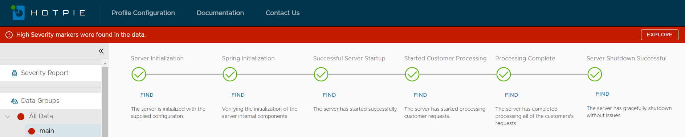
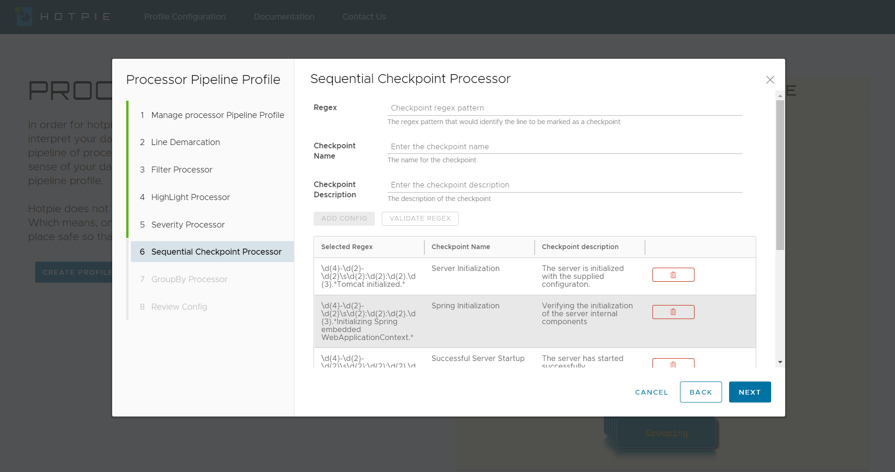

Stop! who goes there?

Whenever we analyze a system where there is an expectation of sequential occurrence of a
specific set of events, we can setup a timeline. The timeline helps us visualize the events that have
occurred and those which haven't but were expected to.
We can setup a max of 6 checkpoints for the entire analysis that should help us identify if the
data is on track or if there are any reasons for concern.
Sample Raw Data
Sample Regex Pattern
The above regex patterns will identify the data unit as a checkpoint. We can include other metadata for a
checkpoint such as the checkpoint name and description that will help make the identification of the
checkpoint easier.
Profile Configurations
